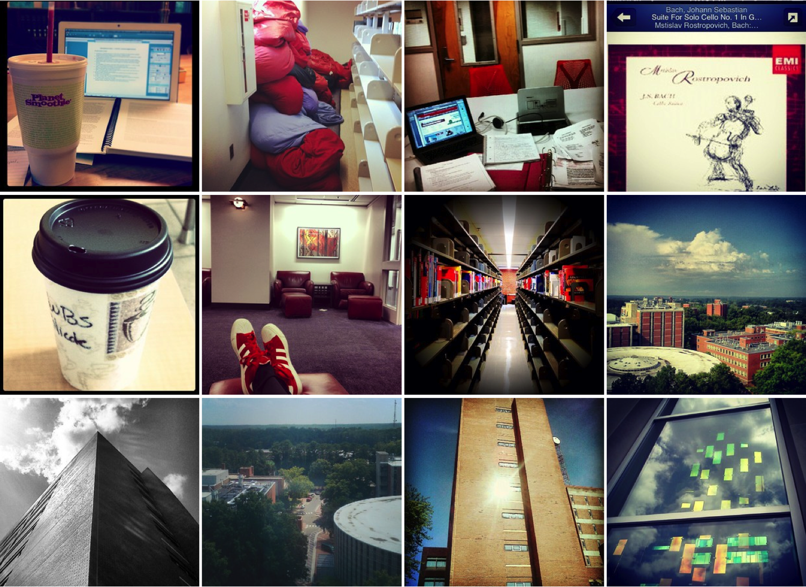

My #HuntLibrary
building new things despite uncertainty and risk
Bret Davidson
NCSU Libraries
Who are we?
- NCSU Digital Library Initiatives
- Digital Services Development
- Librarian Developers
- 25+ Applications
- go.ncsu.edu/dli
Agenda
- My #HuntLibrary
- Work Practices
- Risk in MHL
James B. Hunt, Jr. Library
Opened January 2013
goals
increase engagement
contribution mechanism
explore new technologies
My #HuntLibary/lentil
go.ncsu.edu/myhunt
enabling features
responsive
RESPONSIVE
battle
social
curated and popular views
contributor pages
harvesting
moderation
themes
How do students relate to libraries?
Building crowdsourced photographic collections with lentil and Instagram
speakerdeck.com/cazzersonHow do students relate to us?
- (de)centralization (relation)
- consumption/creation (direction)
- physical/virtual (setting)
- individual/community (identity)
- present/future (horizon)
(de)centralization (relation)
social network
authors
#huntlibrary authors
aggregating peers
lentil users
services, archives

indirect participation
the life of a lentil image
- metadata of user-tagged Instagram image is harvested via API
- image is approved by moderator
- image battles, collects "likes" (subjective metadata)
- (loop) calculate popularity score
- (loop) check for removal from Instagram
- image file is harvested and stored in staging area
- donor agreement is automatically submitted as a comment
- barring author objection, image metadata and file are packaged for (future) external system
Libraries as Storytelling Platforms
Engaging the Academic Community: Library as Storytelling Platform
slideshare.net/mikecontrolOldenburg's “third places"
neutral social sites where conversation is the main activity
Why did people participate?
- Others to see my picture: 83%
- Contribute to NCSU archive: 75%
- Win an iPad Mini: 58%
- See my pic on a public display: 50%
- Other: 25%
How would you feel about your photos being added to an archival collection?
“I would be so excited. For me, I think it would be better than winning an iPad."
usage
- 3000+ images
- 7700+ "likes"
- 70,000+ "battles"
- 37,000+ visits
- 240,000+ pageviews
- 1000+ donor agreements
- 2 objections
work practices
brainstorming
rapid prototyping
one pager
- Summary
- Requirements
- Features
- Out of Scope
- Project Team
- Schedule
out of scope
- Images not related to Hunt
- Advanced curation tools
- Advanced presentation of images
project team
- Mike Nutt => product lead
- Jason Casden => project manager
- Cory Lown => developer
- Bret Davidson => developer
- Jason Ronallo => rails expert
- Brian Dietz => special collections
- Jennifer Garrett => visitor experience
other partners
- Steve Morris => project champion
- Will Cross => copyright/legal
- David Hiscoe => communications
- Todd Kosmerick => archives
- Library Admin => contest
- Library IT => microtiles
- And more...
trello
peer instruction
pair programming
code review
blameless post-mortem
go.ncsu.edu/postmortemquestions
- What worked well?
- What was frustrating?
- What were you proud of?
- What would you change if you had magical powers?
- How did you feel about our estimates and plan?
- Were expectations clear?
- Did the team work together well?
risk
“learn everything, then there is no such thing as sight-reading"
Brian Bowman
“mini moon shots"
minimum viable product
risk mitigation in MHL
timeline
new technologies
participation
legal issues
instagram platform
risk in MHL
- Timeline
- New Technologies
- Participation
- Legal Issues
- Instagram Platform
closing thoughts
- scope ruthlessly
- practice work
- mitigate risk
credits
- Jason Casden
- Brian Dietz
- Jennifer Garrett
- Cory Lown
- Mike Nutt
- Jason Ronallo
- ...and many others
github.com/NCSU-Libraries/lentil
Thank You!
bret_davidson@ncsu.edu | http://go.ncsu.edu/myhunt